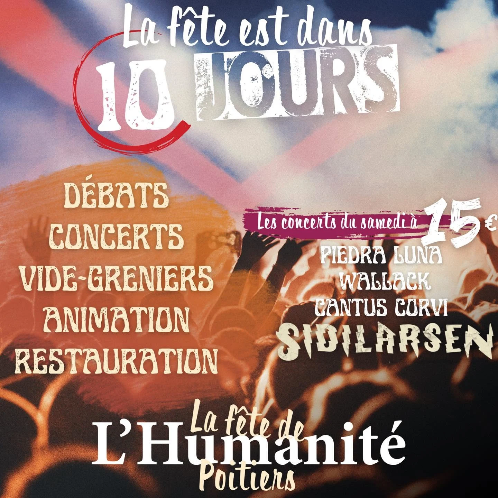

Publication relayée par le PCF 79
Fête de l’Humanité à Buxerolles. Le programme des 19 et 20 mai 2023
Date de mise à jour indiquée par Facebook · 11 mai 2023
Texte de la publication · Fête de l’Humanité Poitiers
💥 La fête c’est dans 1️⃣0️⃣ jours 🤯
Les 19 et 20 mai à la maison des projets de Buxerolles, concerts, débats, expositions, vide-greniers, y’aura de quoi faire 🥵
ℹ️ La fête est gratuite sauf les concerts du samedi soir vous trouverez la billetterie ici : https://www.billetweb.fr/fete-de-lhumanite-2023&multi...
Repères éditoriaux
L’annonce donne rendez-vous les 19 et 20 mai 2023 à la Maison des projets de Buxerolles.

Sources
Fête de l’Humanité Poitiers · publication relayée par le PCF 79 · bibliothèque Facebook · AR-0002-FB-01658
À lire aussi · Pass culture, non à la punition collective ! · Le lien d’origine